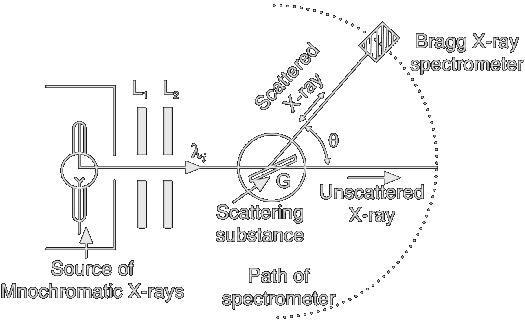

The Compton Effect
The phenomenon which perhaps played the most decisive role in convincing physicists at the turn of the century that light on some occasions displays corcorpuscular character was that which we now call the Compton effect, that is, the collision of X- or 7-rays with electrons. Even though the phenomenon was alalready known, Compton in 1923, carried out the crucial experiments needed to understand it In these, he demonstrated that upon illumination of a body with X-rays, some secondary radiation appeared in addition to the dispersed one. He proved that the wavelength of this secondary ray was independent of the material used in the experiment, depending only on the wavelength of the incident radiradiation and the angle between the incident and secondary rays. He also observed that the wavelength of the secondary radiation was always greater than or equal to that of the incident radiation.
Compton himself tried to explain this phenomenon within the framework of the wave theory of light but, finding this impossible, had recourse to a corpuscular theory.
Not only did he accept that light of frequency v is composed of photons with energy E, but also that these photons have momentum p:
E = hν, p = hν/c = h /λ (1.1)
the momentum being in the direction of the classical light ray. Inspection of the relativistic relation between energy and momentum, E = (pc2 + mc2)1/2, shows that (1.1) is equivalent to supposing that photons are particles with zero rest-mass mγ. (Experimental evidence confirms that mγc2 < 3 x 10−33 MeV.
The energy of the photons in Compton's experiment was much larger than the binding energy of the electrons in the solid, so that the electrons can be considered to be at rest. Compton applied the energy-momentum conservation laws to the elastic electron-photon collision.
In the initial state, before the collision, we write referring to Fig.1
| Energy | Momentum | |
|---|---|---|
| Photon | E0 = hc /λ0 | p0 = hux/λ0 |
| Electron | Ee = mec2 | pe = 0 |
The scattered photon carries energy E' = hν' and total momentum p' = hν'/c in the direction given by the angle θ. The electron, which was originally at rest, recoils with momentum p in the direction given by the angle φ.
| Energy | Momentum | ||
|---|---|---|---|
| Photon | E1 = hc /λ1 | p = hux/λ1 | at angle θ with respect to p0 |
| Electron | E2 = mec2 | p2 | at angle φ with respect to p0 |
Applying conservation of energy and momentum as for point particles we get
E0 + Ee = E1 + E2, p0 = p1 + p2
We rewrite conservation of energy using the relativistic relation
p0 + mc2 = p1 + (pc2 + mc2)1/2 ⇒ p22 (p0 − p1)2 + 2(p0 − p1)mec
Conservation of linear momentum, yields
p2 = p0 − p1 ⇒ p2 = p02 + p12 − 2p0p1 cos θ
By equating the two expression for p22
, we obtainp0 − p1 = p0p1 (1 − cos θ)/mec
Expressing photon's momenta in terms of their wavelenghts, we obtain the Compton relation
λ1 − λ0 = h(1 − cos θ)/mec
This equation gives the change in wavelength expected for a photon that is scattered through the angle θ by the electron mass m. This change is independent of the wavelength λ of incident photon. The scattered photo has a greater wavelenght than the incident photon, as consequence of the transfer of enegery to the electron. The difference Δλ increases with the angle, with we the greatest wavelength change possible corresponding to θ=180°.
The quantity λc = h/mec, is called the Compton wavelength of the electron. For an electron
λc = 2.426×10−12 m
In terms of λc, Compton relation becomes λ−λ′ = λc(1− cos θ).
The Compton effect is consistent with the experimental results confirming the corpuscular behavior of light that had surfaced as a surprise ater Einstein formulated his theory of photoelectric effect.
Experimental Setup
A schematic diagram of the apparatus for studying for Compton scattering is shown in Fig.2. A monochromatic beam of Kα x-rays of wavelength λ1 from the molybdenum target were collimated by passing it through the slits L1 and L2. The collimated beam was then mae incident on a graphite block, G. The graphite block scattered x-rays in different directions. The scattered x-rays were detected by a Bragg's x-ray spectrometer. Brag's law was used in determining the wavelength of scattered x-rays. X-rays diffracted by the crystal in the spectrometer were passed through an ionisation chamber to measure their intensity.
The scattering angle θ was varied and corresponding x-ray wavelenghts and their intensities were determined.